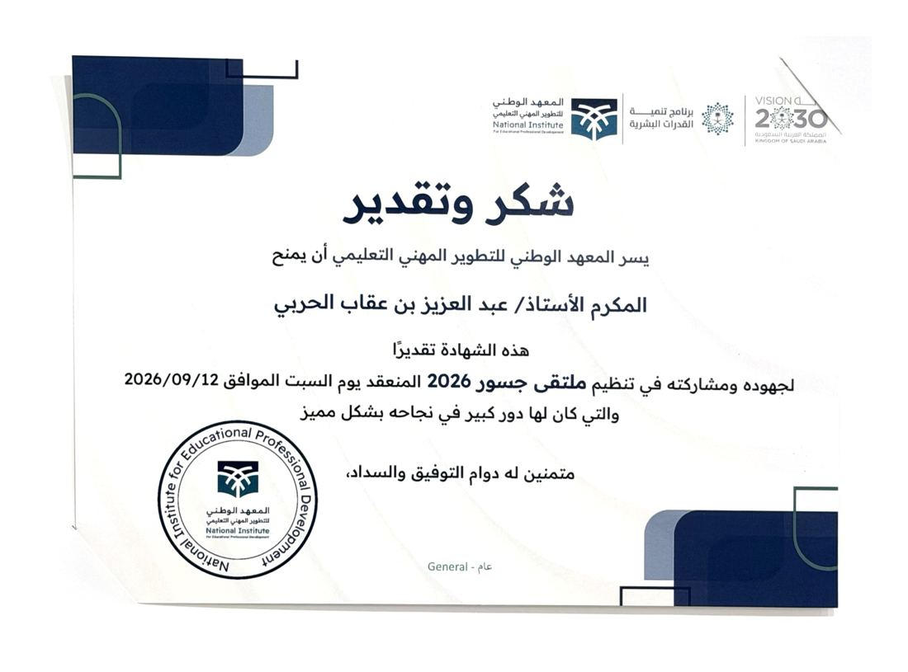
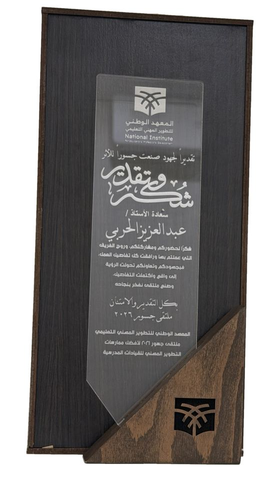

عبدالعزيز عقاب الحربي
التشغيل والبياناتوإدارة التغيير.
أخصائي تطوير إداري في المعهد الوطني للتطوير المهني التعليمي، وبكالوريوس إدارة أعمال من جامعة القصيم. خمسة مشاريع لبرامج قيادات المدارس في ست عشرة إدارة تعليم، ودراسة جدوى لمشروع صناعي.
برنامج التطوير المهني لقيادات المدارس · 2026
منصة إدارة
متدربي القيادات
30,053
مدير ووكيل مدرسة في قاعدة واحدة.
كل رقم فيها يرجع إلى خليته في ملف الإكسل.
16 إدارة تعليم،
ولكل إدارة نسختها.
كل إدارة ترسل ملفاتها بصيغتها، والأرقام تتغير كل أسبوع، والقيادة تسأل من أين جاء كل رقم. فكتبت برنامجا يقرأ ملفات الإكسل الواردة، ويجمعها في قاعدة واحدة، ويسكّن المرشحين في مجموعاتهم التدريبية، ثم يصدر نسخة لكل إدارة.
المشكلة
ست عشرة إدارة، ولكل منها ملفاتها وأوراقها وأسماء أعمدتها، وتحديث كل أسبوع.
ما بنيته
مسار آلي من الإكسل إلى ملف HTML واحد يعمل بلا إنترنت، وسجل يحفظ لكل قيمة ملفها وورقتها وصفها وعمودها.
النتيجة
بجانب كل رقم علامة «؟» تفتح مصدره، وكشف البناء 145 ملاحظة على البيانات قبل أن تصل الأرقام إلى القيادة.
المصدر: بناء المنصة في 18 أكتوبر 2026. المنصة داخلية لأنها تحمل بيانات أشخاص، فلا رابط عاما لها.
- Python
- Excel
- SQLite
- JavaScript

المعهد الوطني للتطوير المهني التعليمي · منذ سبتمبر 2026
منصة إدارةالتغيير ADKAR
فريق المركز يتابع برنامج تغيير في 16 إدارة تعليم من ملف واحد، بلا خادم.
لم يكن للفريق خادم ولا خدمة سحابية، وأكثر من عضو يقيّم الإدارات في الوقت نفسه. فبنيت تطبيقا في ملف واحد يفتح من الجهاز، يقيّم كل مستوى قيادي على مراحل ADKAR الخمس، ويحدد أول مرحلة تتعثر فيها الإدارة، ويدمج عمل الفريق دون أن يمحو أحد عمل زميله.


أسرع بنحو 15 مرة
- JavaScript
- JSON Schema
- Word (OOXML)
- Claude Code

المعهد الوطني للتطوير المهني التعليمي · أكتوبر 2026
خطة انتدابالممارسين
129 مهمة انتداب يؤديها 57 ممارسا في 16 إدارة، على 14 أسبوعا.
أسبوعان من نوفمبر يحملان 43٪ من مهام الانتداب. ظهر ذلك في الخطة قبل وقته، فعرفت القيادة متى تحتاج التمويل. الخطة تجدول كل مهمة أسبوعا بأسبوع، وتقيس كل مسار بالطريق البري، وتتحقق من مستندات كل ممارس، وتحسب ثلاثة سيناريوهات تمويل تختار القيادة منها.
المصدر: خطة الانتداب 2026، نسخة 10 أكتوبر. الأسبوعان التاسع والعاشر بلا مهام.
أقصر طريق معبد عبر OSRM على OpenStreetMap. المواقع تقريبية.
- Excel
- OSRM
- OpenStreetMap
- Python

ملتقى جسور 2026 · 12 سبتمبر
من صورة القاعةإلى مقعد لكل ضيف
نظام الإجلاس للنسخة الأولى من ملتقى وطني بالشراكة مع كلية لندن الجامعية.
في الملتقى كبار ضيوف وشريك دولي، ولا يحتمل الإجلاس خطأ يوم الحدث. فبنيت أداة تعمل في المتصفح: تتعرف على الكراسي في صورة القاعة من عينة لون واحدة، وترسم الصفوف والمناطق فوقها، وتوزع أكثر من 120 قائدا، ثم تطبع المخطط وبطاقة اسم لكل ضيف.
- صورة القاعة
- نقرة على لون الكرسي
- المقاعد والصفوف والمناطق
- توزيع الحضور
- المخطط وبطاقات الأسماء


كرّمني المعهد بشهادة شكر ودرع الملتقى.
كانت خطة الإجلاس وبطاقات الأسماء جاهزة صباح 12 سبتمبر.
- JavaScript
- Canvas
- HEIC

مركز تطوير القيادات التعليمية · يوليو 2026
قاعدة بياناتالقيادات
أكثر من 80 منصبا قياديا في 16 إدارة تعليم، في قائمة واحدة خلال أسبوعي الأول.
أنا حلقة الوصل التشغيلية بين المعهد والإدارات في المناطق، ولم تكن هناك قائمة مركزية بمن يشغل كل منصب. فبنيت مصنفا بسبع أوراق للفئات القيادية وورقة تتابع رد كل جهة، فيعرف الفريق من يتابعه اليوم.
الأسماء والجوالات والبريد تبقى داخل المعهد.

جامعة القصيم · مشروع التخرج 2026
كسارة في الرياضبعائد داخلي 62.5٪
دراسة جدوى لمصدر الركام الذي تقوم عليه الخرسانة والطرق والمباني.
الكسارة تنتج الحصى والرمل والصخر المكسر لمشاريع البنية التحتية في الرياض. على المستثمر أن يعرف عائدها ومخاطرها من صفحة واحدة، فبنيت نموذج التدفقات النقدية، وحسبت صافي القيمة الحالية والعائد الداخلي بمعدل خصم 5.4٪ وفترة الاسترداد، ووضعت سجلا للمخاطر المالية والتشغيلية والبيئية بمعالجاتها.
+57.1 نقطة مئوية فوق الحد الأدنى
المصدر: دراسة جدوى التخرج، جامعة القصيم، 2026. وفي المرحلة نفسها حلقة بحث عن نظم المعلومات المحاسبية، باستبانة على 94 موظفا حللتها في SPSS.
- Excel
- SPSS
- LINDO
للتواصل
ستة مشاريع،
ولكل رقم فيها مصدره.
تفاصيل كل مشروع ومصادر أرقامه متاحة عند الطلب.